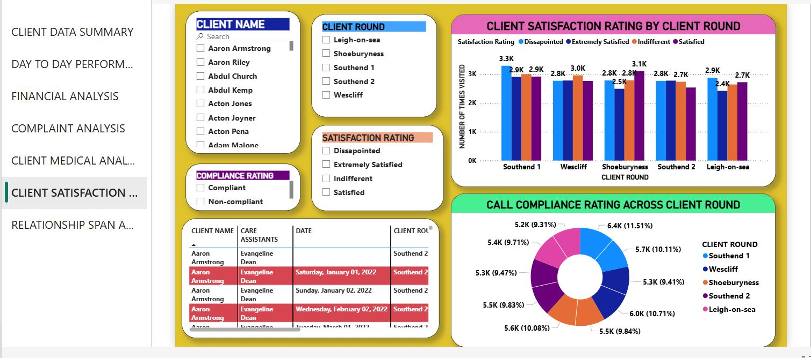
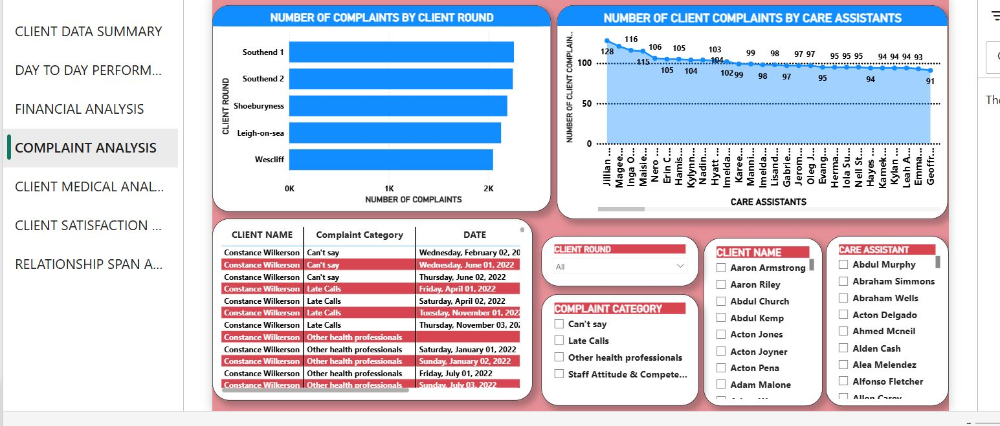
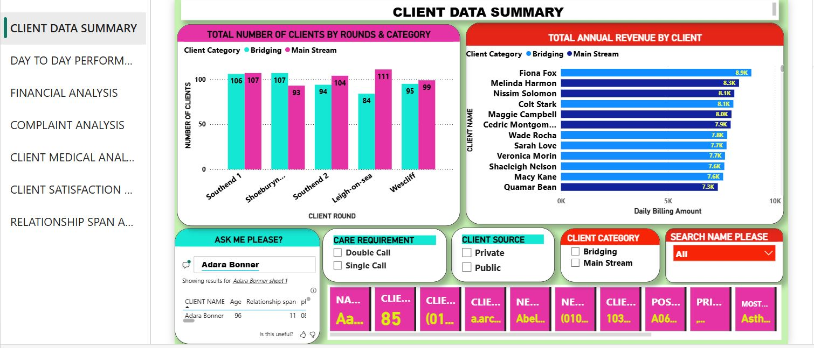
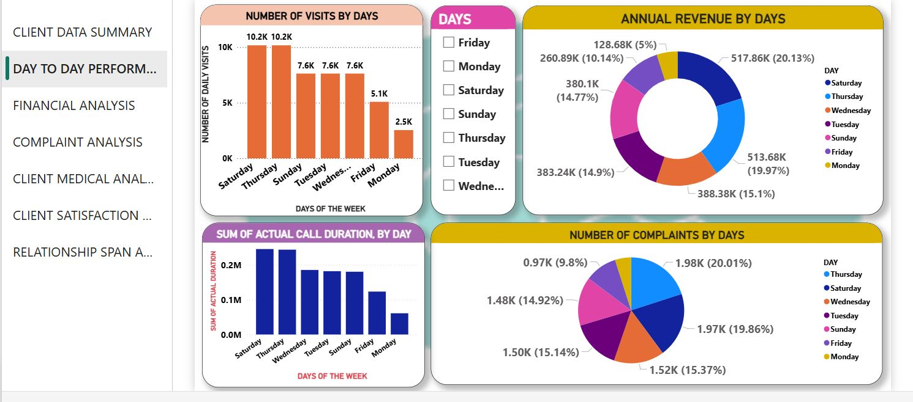
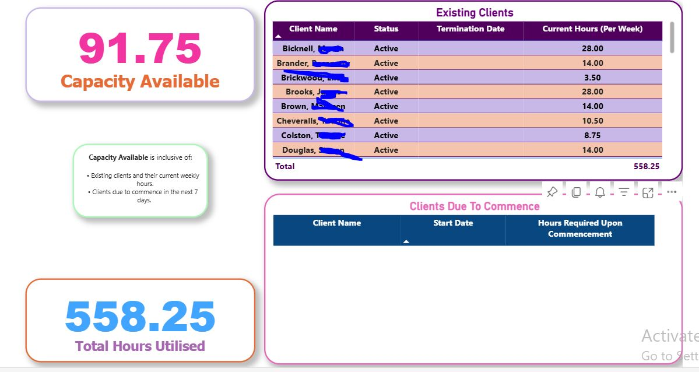
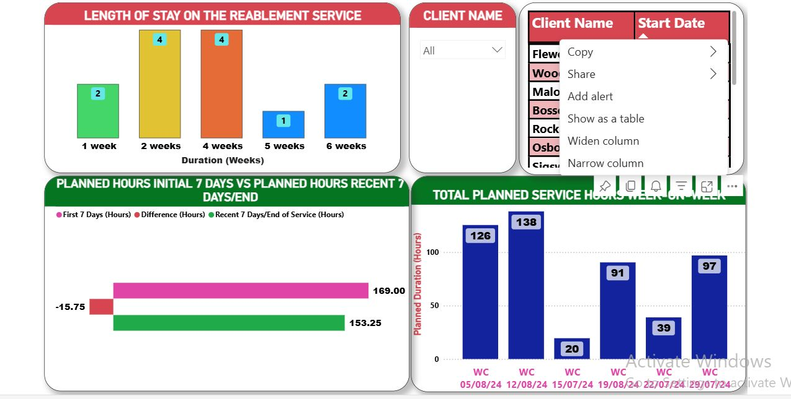

Skills Visualisation
A snapshot of my core analytics and NHS-aligned capabilities.

Healthcare Business Intelligence Analyst | NHS Service Analytics | Power BI Specialist
Transforming healthcare and operational data into actionable insights that support NHS-aligned service delivery.
I am a Healthcare Business Intelligence Analyst specialising in operational analytics for NHS-aligned services including reablement, enhanced discharge coordination, and community care performance monitoring.
My work focuses on building analytics solutions that help healthcare organisations monitor service delivery, track patient outcomes, and improve operational decision-making. I design and develop Power BI dashboards, SQL reporting pipelines, and ETL data models that transform complex operational datasets into clear and actionable insights.
I collaborate with multidisciplinary teams across clinical, operational, and social care environments to translate healthcare data into meaningful performance indicators supporting service improvement, governance, and regulatory reporting.
Through my work with NHS-aligned reablement and discharge services, I have developed a strong understanding of patient pathways, integrated care systems, and the operational pressures surrounding hospital discharge and community care delivery.
Power BI, Data Modelling, KPI Monitoring, Dashboard Design, Data Visualisation, Performance Analytics
SQL, ETL Pipelines, Data Extraction & Transformation, Data Cleansing, Data Quality Assurance
Reablement Analytics, Discharge Monitoring, Patient Pathway Analysis, Integrated Care Systems, Service Capacity Planning
Cross-functional Collaboration, Training Staff, Presenting Insights to Non-Technical Stakeholders
Information Governance, Data Confidentiality, Regulatory Reporting, Healthcare Data Protection
A snapshot of my core analytics and NHS-aligned capabilities.
This Power BI dashboard demonstrates operational insights across care delivery including client satisfaction monitoring, complaint tracking, workforce activity analysis, and revenue performance.
Operational Context
Community care providers require operational visibility into care visits, client feedback, and workforce performance.
Data Sources
Client records, care visit logs, complaints data, workforce scheduling, and service billing data.
Analytical Approach
Power BI dashboards were designed to track care visit compliance, monitor complaints, evaluate staff performance, and analyse service revenue.
Operational Insights
Managers can identify service delivery trends, monitor staff activity, and track client satisfaction indicators.
Service Impact
Improves operational oversight and supports data-driven service management.






This Power BI dashboard supports operational monitoring within an NHS-aligned reablement service. Sensitive patient data has been anonymised.
Operational Context
Reablement services support patients transitioning from hospital discharge back to independent living.
Data Sources
Referral records, care visit logs, service duration metrics, and client recovery goal tracking.
Analytical Approach
Power BI dashboards track referral response times, analyse planned vs actual service hours, and monitor reablement goal completion.
Operational Insights
Managers can evaluate referral responsiveness, monitor care delivery efficiency, and assess recovery progress.
Service Impact
Improves discharge coordination visibility and supports operational decision-making for reablement services.





LinkedIn
linkedin.com/in/kelvin-ikokwu-43b6aa230
Email
kelvinlucas4real2001@gmail.com
GitHub
github.com/KelvinIkokwu